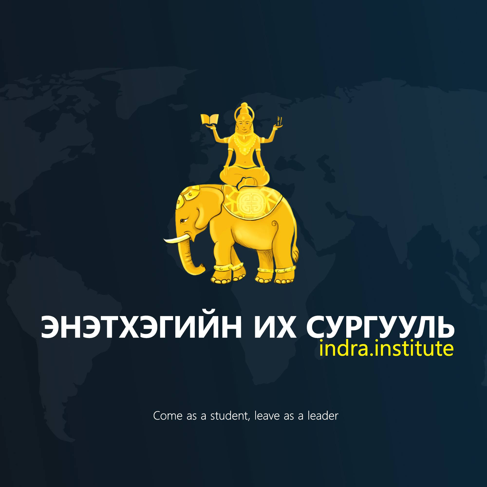

Энэтхэгийн их сургуулийн танилцуулга
- Дэлхийн боловсролын зэргийг Монголдоо эзэмших алтан боломжийг танилцуулж байна
“Индра”их сургууль нь Энэтхэг улсын Банглор их сургууль, SRM сургууль, Amjora компанитай хамтын ажиллагаатай бөгөөд 2017-2018 оны хооронд хийсэн хэлэлцээрийн дагуу 2018 оны есдүгээр сард гэрээгээ баталгаажуулж, Энэтхэг улсын их сургуулийн салбар сургуулийг Монголд албан ёсоор байгуулах эрхтэй болсон билээ. Дөрвөн жилийн хугацаанд олон улсад хамгийн эрэлттэй маркетинг менежмент, график дизайн, программ хангамжийн мэргэжлээрээ дэлхийд өрсөлдөхүйц мэргэжилтэн бэлтгэдэг Энэтхэгийн бакалаврын зэргийг гадаад явах шаардлагагүйгээр эх орондоо сурч ажиллах, мөн боловсролоо дээшлүүлэхийн зэрэгцээ санхүүгийн боломжоо нэмэгдүүлэх сургалтын хөтөлбөрийг санал болгож байна. Манай сургууль Энэтхэг улсын болон дотоодын шилдэг багш ажилчдаар боловсон хүчнээ бүрдүүлж, хичээллэх таатай орчин, олон улсын стандартын номын сан, лаборатор зэргийг ханган ажиллаж байна. Мөн манай сургууль олон улсын дипломын зэрэг олгохоос гадна бүх төгсөгчиддөө ярианы болон бичгийн чадвартай оюутныг 100 хувийн гадаад багштайгаар зааж сурган төгсгөнө. Амжилттай төгсөгчдийг Энэтхэг улсын болон дотоодын компаниудад 100 хувь ажилд зуучилж өгөх нь манай давуу тал юм. Мөн тухайн жилд үзэх хичээлийн урьдчилан бэлдсэн материалыг оюутнуудад тараан өгч, өөрт хялбар хэлбэрээр үзэх, сонсох, унших хувилбараар судлах боломжийг бүрдүүлсэнээрээ онцлогтой.
Мөн өөрсдийн хэрэгжүүлж буй төсөл хөтөлбөрүүд дээрээ оюутнуудтай баг болж хамтарч ажиллах болно.
- Багш нар
Сургуулийн багш нар 4 төрөлд хуваагдана.
1. Энэтхэг багш нар /мэргэжлийн хичээл заана/
2. Бусад улсын гадаад багш нар /Англи хэлний хичээл заана/
3. Монгол багш нар эхний 3 сар хичээл заана /Энэтхэг хөтөлбөрийн дагуу/
4. Багш нар судалгаа шинжилгээг тогтмол хийж, салбарын хөгжил, шинэчлэлийн талаар оюутнуудад цаг алдалгүй мэдээлэл өгнө.